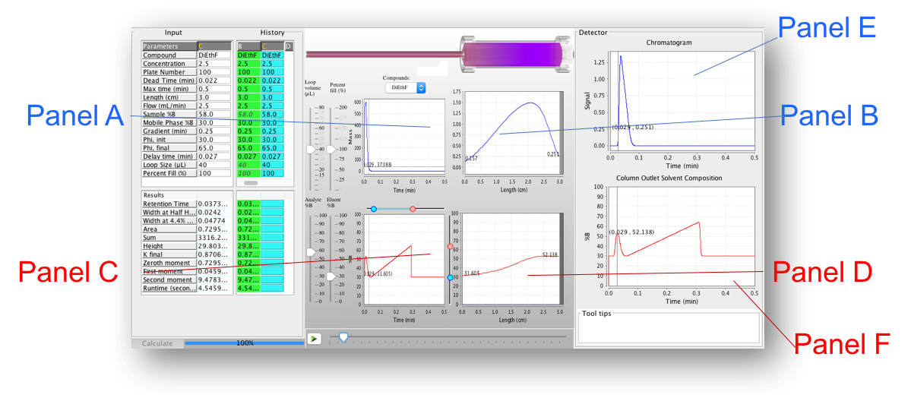

HPLC Column Simulator
HPLC Column Simulator is an application that enables interactive, real-time modeling and visualization of high-performance liquid chromatography (HPLC) experiments. Currently, the simulator is executable as a Java application, and is based on a model that will be published as a peer-reviewed article soon. This particular work is focused on a portion of the available parameter space that is particularly relevant to two-dimensional liquid chromatography.
The application allows the user to track analyte and mobile phase component distributions as they migrate through the column. The program will predict retention time, peak width, and relative height based on inputs including gradient elution conditions, injection volume, sample solvent composition, and extent of sample loop filling. Users interested in details associated with the simulation algorithm are referred to the journal article (DOI: 10.1016/j.chroma.2017.07.041).
At this time, the flow rate should not be changed. The following variables are pre-loaded to values consistent with those published in the paper: Dead Time, Length, Plate Number, and Delay Time. These variables can be changed, but users should only do so understanding that a change in Length must be accompanied by an appropriate change in Dead Time and Plate Number, for example.
The variables that have been studied intensively in developing this application are: sample acetonitrile (ACN) content (10-50%), injection volume (13-80 uL), and loop filling level (25-100%). The application is preloaded with retention information (C18 column, 40 degrees C) for several simple small molecules, including: [diethylformamide (DiEtF), benzylalcohol (BzAlc), methylparaben (PB1), propylparaben (PB3), butylparaben (PB4), acetophenone (AP2), butyrophenone (AP4), and valerophenone (AP5)].
Upon selecting the simulation conditions, pressing the 'calculate' button will calculate the propagation of solvent and analyte profiles through the length of the column, and through time. These results are displayed in real time from several perspectives, as shown in the graphic below. Panel A shows the injection profile as it enters the column inlet. Panel B shows the distribution of the analyte across the column length. Panel C shows the mobile phase composition profile as the solvent enters the column inlet. Panel D shows the mobile phase composition distribution across the column length. Panel E shows the analyte profile at the column exit as a function of time (this is the chromatogram!). Finally, panel F shows the mobile phase composition at the column exit as a function of time. Once the calculation has completed, any moment in time can be re-observed using the playback and playhead buttons.
Pressing the 'Download' button at the bottom of this page will allow you to download a .zip file containing the Java application file (.jar) and supporting files. Unzipping the .zip file and double-clicking on the .jar file should run the application if you have Java installed on your computer. Please send questions about the application to dstoll(at)gustavus.edu.
The development of this application has been supported by grants from the National Science Foundation (CHE award numbers 1213244, 1508159, 1213364, and 1507332), and the Dreyfus Foundation, and is the work of Ray Sajulga and Dwight Stoll.
